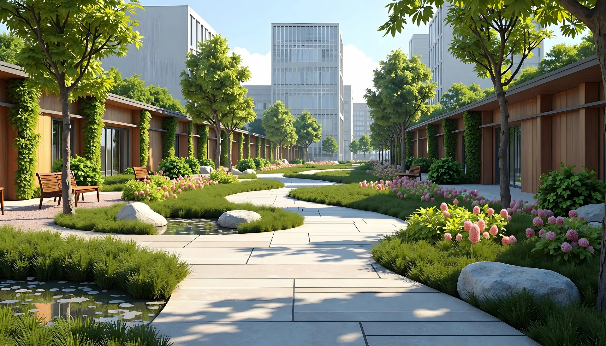
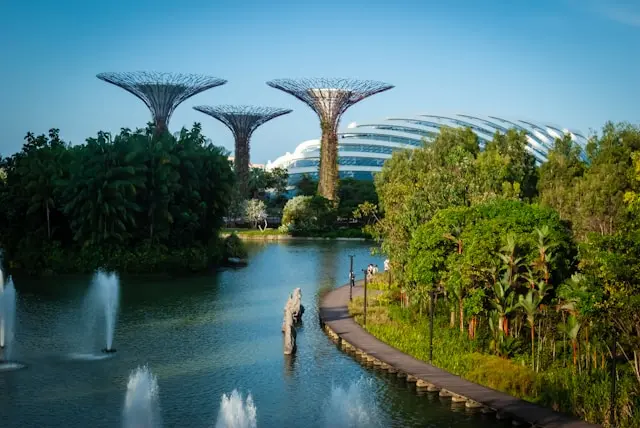
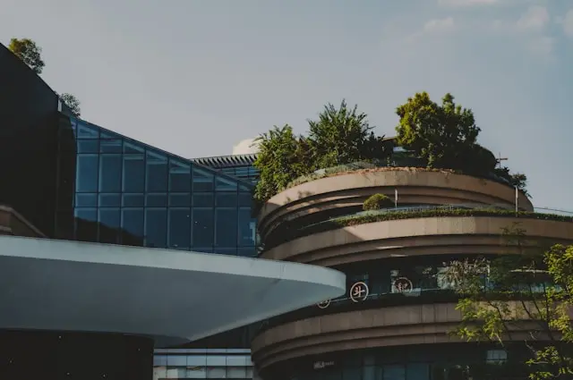
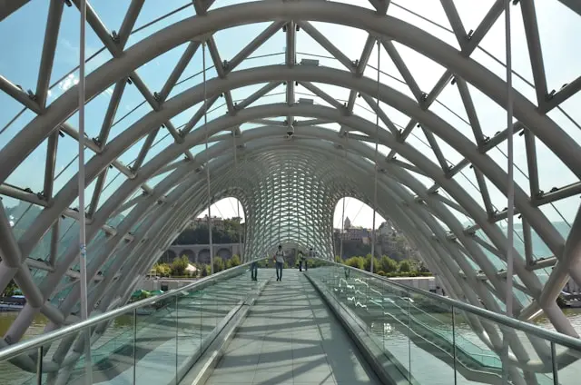

エシカル・フォレスト 結（ゆい）
全住戸に再エネを導入し、既存樹木を活かした設計で生態系を保全します。住むことが地球への貢献となる、サステナブルな誇りと深い安らぎを次世代へとつなぐ循環型街区です。
受け継がれる「変わらない価値」

深呼吸したくなる環境と、愛着が深まる都市設計。
豊かな緑に包まれた、色褪せない都市開発。
100年続く美しさの中で人生の安らぎと、住まいに一生モノのプライドを届けます。
街全体が森のように緑豊かで、子どもが自然と触れ合える環境に満足しています。100年先もこの美しい景色が残ると思えることが、この街に住む一番の誇りです。
以前は便利なだけの都会に住んでいましたが、ここは時間の流れが穏やかです。歳月を重ねるほどに街の風格が増していくのを楽しみにしています。
単なる高級住宅地ではなく、『地球環境に配慮した最先端の街』というコンセプトに惹かれて入居を決めました。

全住戸に再エネを導入し、既存樹木を活かした設計で生態系を保全します。住むことが地球への貢献となる、サステナブルな誇りと深い安らぎを次世代へとつなぐ循環型街区です。

広大な緑地と調和した強固な建築により、持続可能な住環境を実現します。環境負荷を最小限に抑えつつ、住み手の品格を映し出す、真の豊かさを追求しました。

水と緑、そして都市機能が高度に融合したSDGsモデル地区。先進技術で脱炭素を推進し、自然の恩恵を五感で享受する暮らしを提案します。住まう人が人生に誇りを持ち、100年続く安心を約束する先端的都市です。
東京都豊島区南池袋 000-0000
03-××××-××××